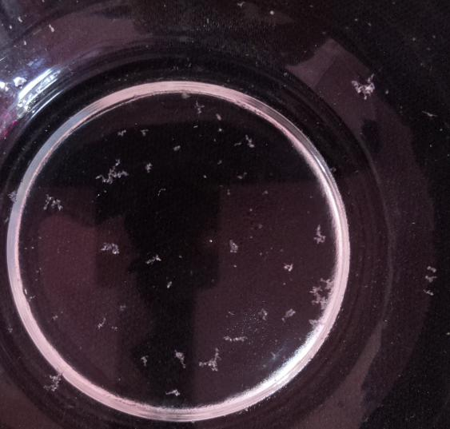

Automated microscopic image analysis for detecting, sizing, and classifying microplastic particles instantly using state-of-the-art computer vision models.
Find microplastic particles instantly
Identify type and size with AI
Get accurate results with confidence
Select a category below to learn about the environmental context, workflow, and capabilities.

Click the Start Detection button. You will be taken to the Single Analysis workspace where all processing happens.
On the left sidebar, locate the Quick Test Samples section. Click on "Test Image 2" to instantly load a high-contamination microscopic sample into the canvas.
Click the glowing cyan Run AI Detection & Sizing button. Within milliseconds, YOLOv8 will map every particle on the screen, showing bounding boxes and confidence scores.
Click the 📑 Lab Report tab at the top of the dashboard. Scroll down and click "Download PDF Report" to save a professional summary of the contamination.
Microplastics are synthetic plastic particles smaller than 5 millimetres in size:
Humans ingest an estimated 5 grams of microplastics per week — equivalent to a credit card.
Drag and drop microscopic imagery or capture live samples with camera.
Select magnification (e.g. 20x for 1.5µm/px) for physical dimension scaling.
Execute YOLOv8 particle localization or Gemini multimodal reasoning.
Detect coordinates, particle sizing, aspect ratios, and morphology classes.
Generate ISO-compliant PDF reports with contamination indices.
Combines the raw speed of Ultralytics YOLOv8 for sub-50ms particle localization with Google Gemini 2.0 to evaluate chemical composition and hazard classifications.
Automated measurement of physical dimensions, aspect ratios, and surface areas (µm²) with customizable pixel-scaling.
Categorizes particles into scientifically verified morphology groups: Fragments, Fibers, Pellets, and Films.
Upload hundreds of microscopic samples simultaneously for background batch analysis and aggregate statistics.
Export comprehensive lab-ready PDF summaries with size distribution histograms and raw CSV boundary coordinates.